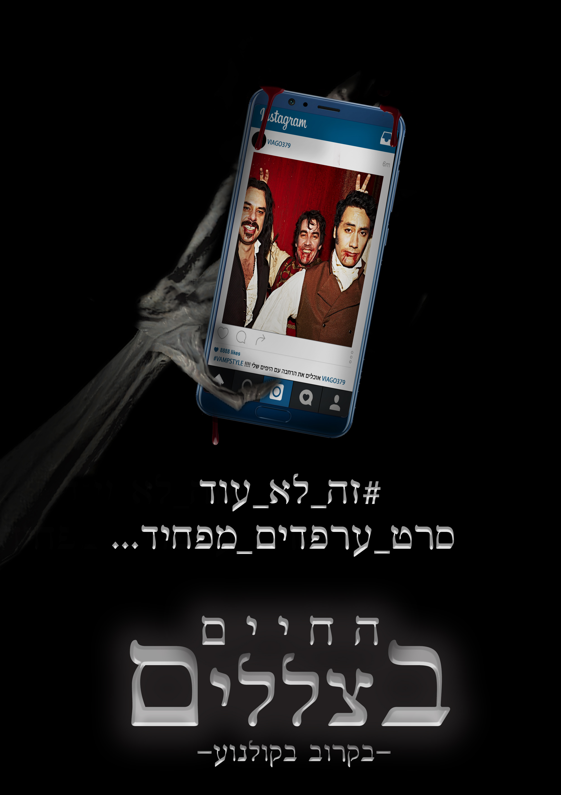

החיים בצללים
פוסטר לסרט "החיים בצללים" , סרט מניו-זילנד העוסק ב3 ערפדים החיים בניו זילנד.
נעשה כחלק מקורס "גרפיקה ממוחשבת לטל"מ" , 2019.

פוסטר לסרט "החיים בצללים" , סרט מניו-זילנד העוסק ב3 ערפדים החיים בניו זילנד.
נעשה כחלק מקורס "גרפיקה ממוחשבת לטל"מ" , 2019.